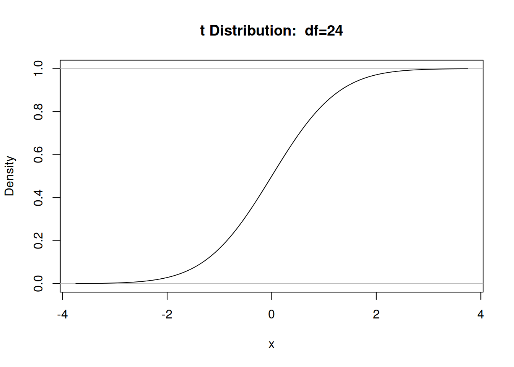
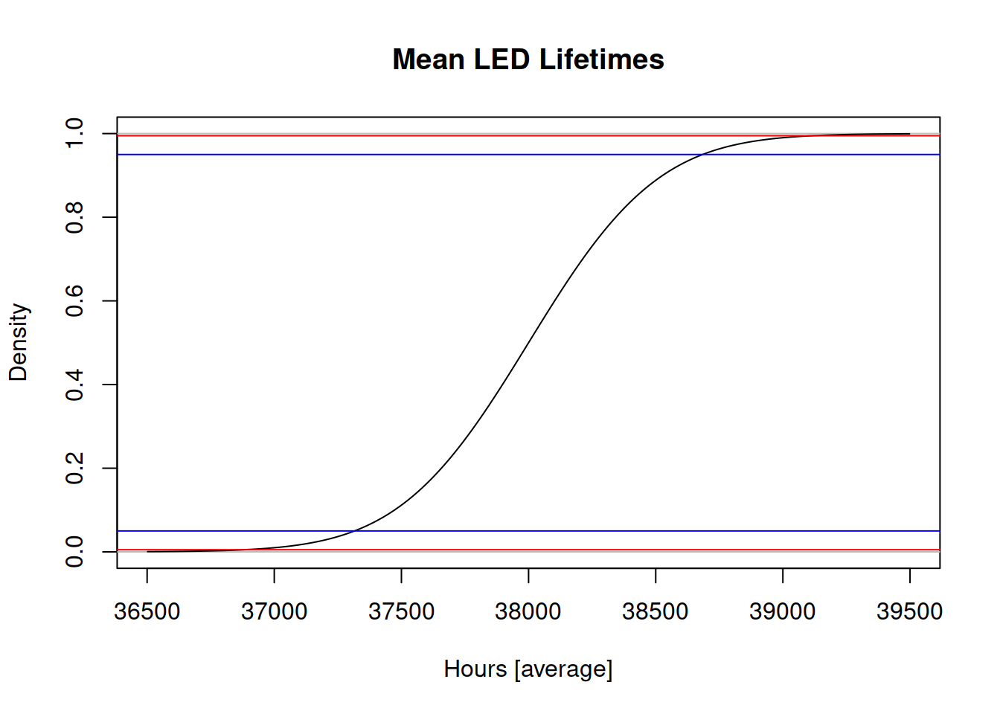
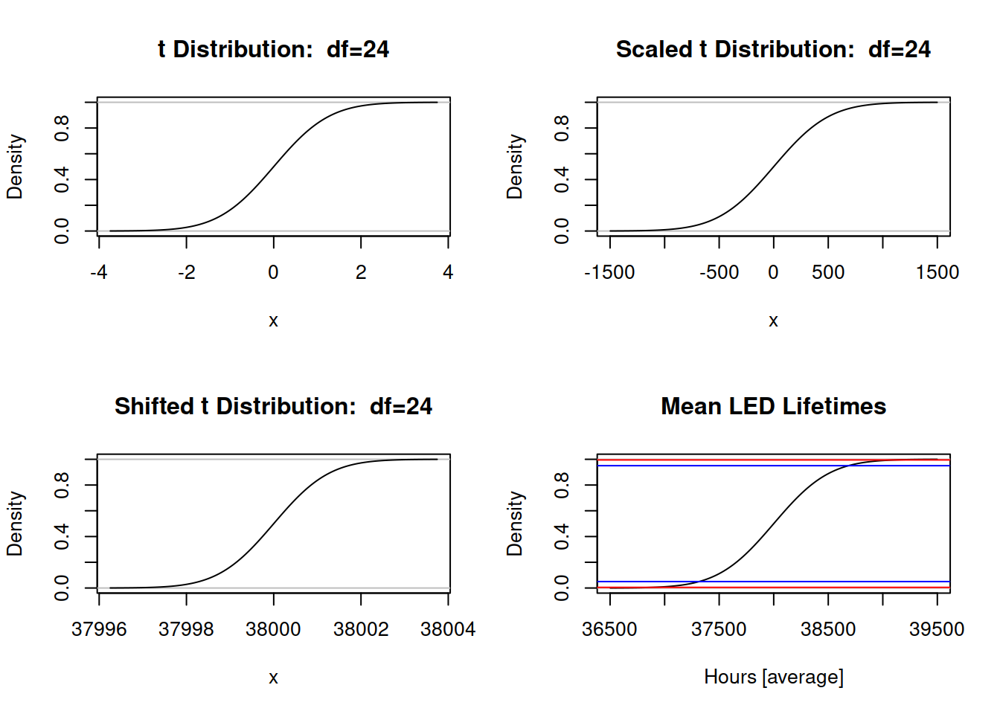
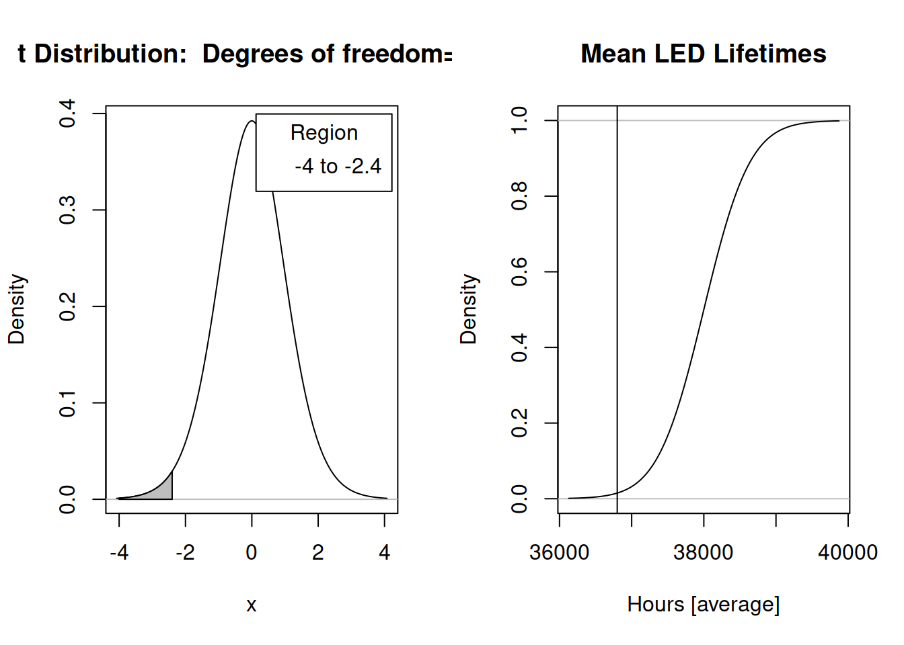
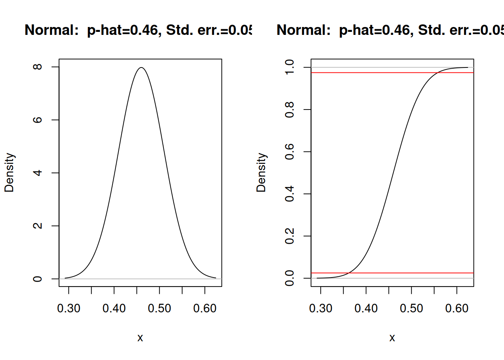
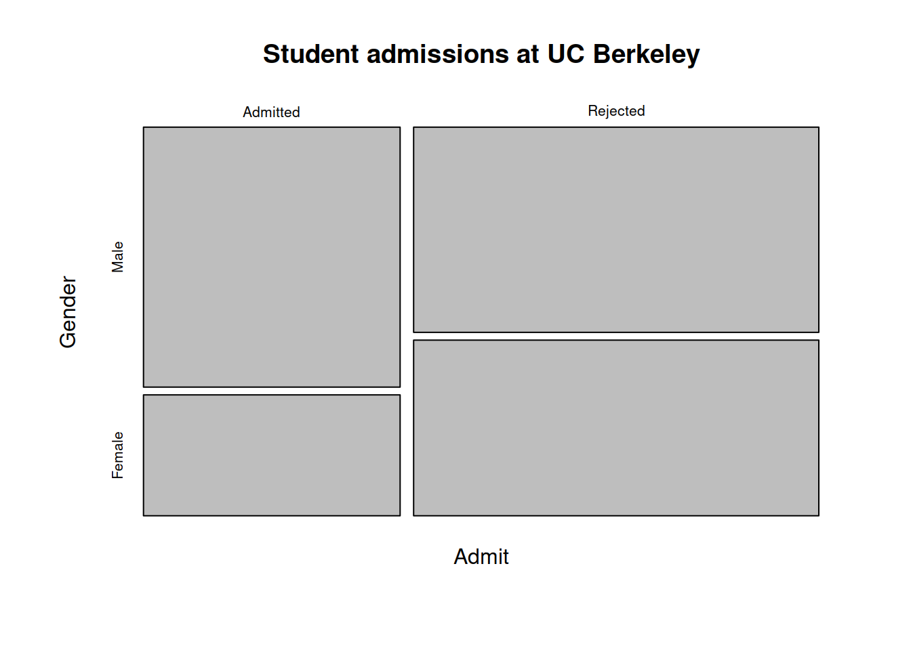
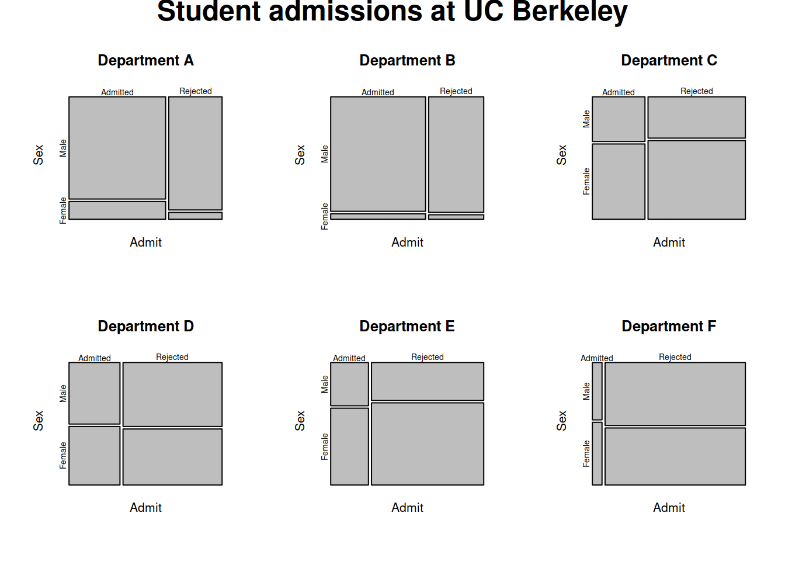

Two classes of statistics have known distributions.
The t distribution - is entirely defined by degrees of freedom. - has as metric, the standard error [in this case of the mean]
The equations: \[ \Large t = \frac{\overline{x} - \mu}{\frac{s}{\sqrt{n}}} \] and \[ \Large \mu = \overline{x} + t(\frac{s}{\sqrt{n}}) \] The true mean is symmetric about the sample mean with t defining the number of standard errors of the mean above and below.
## Loading required package: car## Loading required package: carData## Loading required package: sandwich
# 99 percent, then 95, 90, and 80
qt(c(0.005,0.995), df=24)## [1] -2.79694 2.79694qt(c(0.025,0.975), df=24)## [1] -2.063899 2.063899qt(c(0.05,0.95), df=24)## [1] -1.710882 1.710882qt(c(0.1,0.9), df=24)## [1] -1.317836 1.317836
# 99 percent, then 95, 90, and 80
mean(LEDLifetimes$lifetime)+sd(LEDLifetimes$lifetime)/sqrt(25)*qt(c(0.005,0.995), df=24)## [1] 36881.2 39118.8## [1] 37174.43 38825.57## [1] 37315.64 38684.36## [1] 37472.86 38527.14 ***
with(LEDLifetimes, (t.test(lifetime, alternative='two.sided', mu=0.0,
conf.level=.95)))##
## One Sample t-test
##
## data: lifetime
## t = 94.998, df = 24, p-value < 2.2e-16
## alternative hypothesis: true mean is not equal to 0
## 95 percent confidence interval:
## 37174.43 38825.57
## sample estimates:
## mean of x
## 38000Assume a true mean \(\mu\). How likely, if \(\mu\) is true, is the sample mean that we obtained? Now, \(\mu\), \(\overline{x}\), \(s\), and \(n\) are known. We need only figure out the question and the associated probability. Do we wish to know…. - whether \(\mu\) is equal to some value (two-sided alternative). - whether \(\mu\) is greater than some value. - whether \(\mu\) is less than some value.
We will examine the probability of the complements. We find a sample mean of 36800 given a sample size of 16? -2.4. The probabilities are - 0.0149 with inequality [one-tail] - 0.0298 with not equal to [two-tails].
\[ \Large t = \frac{36800 - 38000}{\frac{2000}{\sqrt{16}}} = -2.4 \]
============================= left: 40% title: false
 *** N=25 [the data]
with(LEDLifetimes, (t.test(lifetime, alternative='two.sided', mu=36800,
conf.level=.95)))##
## One Sample t-test
##
## data: lifetime
## t = 2.9999, df = 24, p-value = 0.006207
## alternative hypothesis: true mean is not equal to 36800
## 95 percent confidence interval:
## 37174.43 38825.57
## sample estimates:
## mean of x
## 38000The equations: \[ \Large t = \frac{\overline{x} - \mu}{\frac{s}{\sqrt{n}}} \] and \[ \Large n = [\frac{st}{(\overline{x} - \mu)}]^2 \] We take the size of the necessary confidence interval and divide by the acceptable and assumed margin for error and square the result. It’s not perfect; the realized margin of error depends on the sample as does \(s\). This is hard to solve because t depends on \(n\).
We can approximate with a normal; it will be less wrong as the required sample gets big.
There are restrictions on when this works (np and n(1-p) greater than 5).
It allows us to, given data, ask for a reasonable range of the true probability \(\pi\) or \(p_0\) in a binomial. It is heavily deployed in survey sampling [especially in the polling silly season].
The equations: \[ \Large z = \frac{\hat{p} - \pi}{\sqrt(\frac{p(1-p)}{n}} \] and \[ \Large \pi = \hat{p} + z\sqrt{\frac{\hat{p}(1-\hat{p})}{n}} \]
\[ \Large \pi = 0.46 + z\sqrt{\frac{0.46(1-0.46)}{100}} \] \[ \Large \pi = 0.46 + z*0.05 \] - What confidence? - 95 percent lower bound? \(z=-1.645\) 0.378 - 95 percent upper bound? \(z=1.645\) 0.542 - 95 percent central interval? \(z=(-1.96,1.96)\) 0.362, 0.558
left: 70%  *** I reordered the outcomes.
================================ title: false
##
## 1-sample proportions test without continuity correction
##
## data: rbind(.Table), null probability 0.5
## X-squared = 0.64, df = 1, p-value = 0.4237
## alternative hypothesis: true p is not equal to 0.5
## 95 percent confidence interval:
## 0.3656081 0.5573514
## sample estimates:
## p
## 0.46p.hat <- 0.46
p.hat+qnorm(c(0.025,0.975))*sqrt(p.hat*(1-p.hat)/100)## [1] 0.3623159 0.5576841##
## 1-sample proportions test without continuity correction
##
## data: rbind(.Table), null probability 0.5
## X-squared = 0.64, df = 1, p-value = 0.2119
## alternative hypothesis: true p is less than 0.5
## 95 percent confidence interval:
## 0.0000000 0.5419527
## sample estimates:
## p
## 0.46p <- 0.5; p.hat <- 0.46; (p.hat - p)/sqrt(p*(1-p)/100)## [1] -0.8pnorm((p.hat - p)/sqrt(p*(1-p)/100))## [1] 0.21185542*pnorm((p.hat - p)/sqrt(p*(1-p)/100))## [1] 0.4237108p.hat+qnorm(0.95)*sqrt(p^2/100)## [1] 0.5422427Solves a problem in this way. What would \(p\) have to be to generate this set of binomial outcomes with the given probability? In this instance, it runs through the possible values of p so that - 46 or more yes’s are 97.5 percent and then that - 46 or fewer yes’s are 2.5 percent.
pbinom(45, size=100, prob=0.3598434)## [1] 0.9749999pbinom(46, size=100, prob=0.5625884)## [1] 0.02500002======================================= title: false
##
## Frequency counts (test is for first level):
## Satisfied.
## Yes No
## 46 54##
## Exact binomial test
##
## data: rbind(.Table)
## number of successes = 46, number of trials = 100, p-value = 0.4841
## alternative hypothesis: true probability of success is not equal to 0.5
## 95 percent confidence interval:
## 0.3598434 0.5625884
## sample estimates:
## probability of success
## 0.46Find one…
\[ n = \frac{z^2*SE(p)^2}{MOE^2} \\ MOE = \sqrt{\frac{z*\sqrt{SE(p)}}{N}} \] ***
sqrt(1.96*0.5/517)## [1] 0.04353793sqrt(1.96*0.5/701)## [1] 0.03738988sqrt(1.96*0.5/657)## [1] 0.03862161sqrt(1.96*0.5/902)## [1] 0.032961711.96^2*0.5^2/0.03^2## [1] 1067.111The ideas of confidence intervals and hypothesis tests also extend to comparisons among samples. Before developing these ideas, we need to introduce the key idea of covariance.
Sample covariance is the shared variation in two observed variables defined as (with metric (xy)) - populations would substitute \(\mu\) for \(\overline{x,y}\):
\[ \Large Cov(x,y) = \frac{1}{n-1}\sum_{i=1}^{n} (x_{i} - \overline{x})(y_{i} - \overline{y}) \]
The idea of correlation is related, we divide by the standard deviation of the two variables to render it metricless [and absolute between -1 and 1].
\[ \Large Cor(x,y) = \frac{\sum_{i=1}^{n} (x_{i} - \overline{x})(y_{i} - \overline{y})}{s_{x}s_{y}} \]
We can measure covariance. But the measured covariance depends on the mean.
Are the units sampled in independent or dependent fashion?
Are given in your text on 217–221. The same duality exists here between \(\hat{\pi}\) versus hypotheses about \(\pi\). The way this is handled when one claims no difference is different than when one claims a difference [see section 6.2.4, p.222].
Simulation renders much of this silly.
The big idea is that we simulate things because we can. In old school statistics, the limitations were imposed by the difficulty and need for obtaining analytical solutions. We can use the computer and sampling to replace these arcane mathematical troubles.
This idea applies to proportions based on binary data [and next week, to means]. Take the example of CreditProducts. Let me first show a table of the data and embed the function.
##
## No Yes
## 56 144The command resample.prop requires a vector of data with two outcomes of whatever form. Yes and No, True and False, Up and Down, or 0 and 1, or even 0 and 10000. As long as it is binary, the code will work. It also has a key option, tab.col which embeds whether you want the first 1 or second 2 column of the table. Here, I will use 2 because I want the probability of Yes on credit products.
Cred.Prod.Res <- resample.prop(CreditProducts$Credit, tab.col=2)
binom.test(144,200)##
## Exact binomial test
##
## data: 144 and 200
## number of successes = 144, number of trials = 200, p-value = 4.015e-10
## alternative hypothesis: true probability of success is not equal to 0.5
## 95 percent confidence interval:
## 0.6523113 0.7810388
## sample estimates:
## probability of success
## 0.72prop.test(144,200)##
## 1-sample proportions test with continuity correction
##
## data: 144 out of 200, null probability 0.5
## X-squared = 37.845, df = 1, p-value = 7.659e-10
## alternative hypothesis: true p is not equal to 0.5
## 95 percent confidence interval:
## 0.6514606 0.7799182
## sample estimates:
## p
## 0.72quantile(Cred.Prod.Res, c(0.025,0.975))## 2.5% 97.5%
## 0.655000 0.780125The probability distributions are all very similar. They all attempt to capture the same idea.
Embed the same logic. First, I want a random \(\pi\) from sample 1. Then I want a random \(\pi\) from sample 2. I want to measure the difference between these two random means. Why measure them separately? Because I do not know who matches with whom and, oftentimes, we have different size samples and we do not wish to discard relevant information from which to sample these means.
We have a proportions test to examine whether the probability of yes [in a binomial] is the same or different in two samples. First, let me illustrate the workflow.
Now I take two samples of binary data and take a random sample of each, calculate the sample proportions, and subtract one from the other. For this example, let me use data on Defaults. 0 is no default; 1 is a default. I will again need the second column.
table(Defaults$Commercial)##
## 0 1
## 169 31table(Defaults$Consumer)##
## 0 1
## 86 19The command is resample.ind.prop that requires two binary vectors as inputs.
##
## 2-sample test for equality of proportions with continuity correction
##
## data: c(31, 19) out of c(200, 105)
## X-squared = 0.17549, df = 1, p-value = 0.6753
## alternative hypothesis: two.sided
## 95 percent confidence interval:
## -0.12230938 0.07040462
## sample estimates:
## prop 1 prop 2
## 0.1550000 0.1809524## 2.5% 97.5%
## -0.11859524 0.06119048My simulated interval is a bit tighter; the z is an approximation.
We want to know if two groups are the same or different in terms of the underlying probability \(\pi\) that describes the binomial. Why? If they are the same, then whatever it is that determines the two groups can be thought independent of \(\pi\). Knowing which group does not matter.
data("UCBAdmissions")
mosaicplot(apply(UCBAdmissions, c(1, 2), sum),
main = "Student admissions at UC Berkeley")
opar <- par(mfrow = c(2, 3), oma = c(0, 0, 2, 0))
for(i in 1:6)
mosaicplot(UCBAdmissions[,,i],
xlab = "Admit", ylab = "Sex",
main = paste("Department", LETTERS[i]))
mtext(expression(bold("Student admissions at UC Berkeley")),
outer = TRUE, cex = 1.5)
par(opar)Now to the statistics. But first, \(\chi^2\). It’s a probability distribution. It is entirely defined by degrees of freedom. And it is derived from a squared normal. If I have to calculate two proportions, I consume two degrees of freedom; if only one proportion need be calculated[meaning they are the same] then only one. The difference in degrees of freedom is one. That’s our \(\chi^2\) parameter: df.
table(UCB.Admit$M.F,UCB.Admit$Admit)##
## No Yes
## Female 1278 557
## Male 1493 1198prop.table(table(UCB.Admit$M.F,UCB.Admit$Admit), 1)##
## No Yes
## Female 0.6964578 0.3035422
## Male 0.5548123 0.4451877# Tests work across the rows.
prop.test(table(UCB.Admit$M.F,UCB.Admit$Admit))##
## 2-sample test for equality of proportions with continuity correction
##
## data: table(UCB.Admit$M.F, UCB.Admit$Admit)
## X-squared = 91.61, df = 1, p-value < 2.2e-16
## alternative hypothesis: two.sided
## 95 percent confidence interval:
## 0.1129887 0.1703022
## sample estimates:
## prop 1 prop 2
## 0.6964578 0.5548123So Women are seen, with 95% confidence, to be rejected by Berkeley 0.113 to 0.170 more often, expressed in a difference in probability metric. Moreover, the probability of Admission is not independent of Male and Female.
UCBS.Admit = subset(UCB.Admit, subset=Dept=="A")
table(UCBS.Admit$M.F,UCBS.Admit$Admit)##
## No Yes
## Female 19 89
## Male 313 512prop.table(table(UCBS.Admit$M.F,UCBS.Admit$Admit), 1)##
## No Yes
## Female 0.1759259 0.8240741
## Male 0.3793939 0.6206061# Tests work across the rows.
prop.test(table(UCBS.Admit$M.F,UCBS.Admit$Admit))##
## 2-sample test for equality of proportions with continuity correction
##
## data: table(UCBS.Admit$M.F, UCBS.Admit$Admit)
## X-squared = 16.372, df = 1, p-value = 5.205e-05
## alternative hypothesis: two.sided
## 95 percent confidence interval:
## -0.2877797 -0.1191564
## sample estimates:
## prop 1 prop 2
## 0.1759259 0.3793939UCBS.Admit = subset(UCB.Admit, subset=Dept=="B")
table(UCBS.Admit$M.F,UCBS.Admit$Admit)##
## No Yes
## Female 8 17
## Male 207 353prop.table(table(UCBS.Admit$M.F,UCBS.Admit$Admit), 1)##
## No Yes
## Female 0.3200000 0.6800000
## Male 0.3696429 0.6303571# Tests work across the rows.
prop.test(table(UCBS.Admit$M.F,UCBS.Admit$Admit))##
## 2-sample test for equality of proportions with continuity correction
##
## data: table(UCBS.Admit$M.F, UCBS.Admit$Admit)
## X-squared = 0.085098, df = 1, p-value = 0.7705
## alternative hypothesis: two.sided
## 95 percent confidence interval:
## -0.2577106 0.1584249
## sample estimates:
## prop 1 prop 2
## 0.3200000 0.3696429UCBS.Admit = subset(UCB.Admit, subset=Dept=="C")
table(UCBS.Admit$M.F,UCBS.Admit$Admit)##
## No Yes
## Female 391 202
## Male 205 120prop.table(table(UCBS.Admit$M.F,UCBS.Admit$Admit), 1)##
## No Yes
## Female 0.6593592 0.3406408
## Male 0.6307692 0.3692308# Tests work across the rows.
prop.test(table(UCBS.Admit$M.F,UCBS.Admit$Admit))##
## 2-sample test for equality of proportions with continuity correction
##
## data: table(UCBS.Admit$M.F, UCBS.Admit$Admit)
## X-squared = 0.63322, df = 1, p-value = 0.4262
## alternative hypothesis: two.sided
## 95 percent confidence interval:
## -0.03865948 0.09583940
## sample estimates:
## prop 1 prop 2
## 0.6593592 0.6307692UCBS.Admit = subset(UCB.Admit, subset=Dept=="D")
table(UCBS.Admit$M.F,UCBS.Admit$Admit)##
## No Yes
## Female 244 131
## Male 279 138prop.table(table(UCBS.Admit$M.F,UCBS.Admit$Admit), 1)##
## No Yes
## Female 0.6506667 0.3493333
## Male 0.6690647 0.3309353# Tests work across the rows.
prop.test(table(UCBS.Admit$M.F,UCBS.Admit$Admit))##
## 2-sample test for equality of proportions with continuity correction
##
## data: table(UCBS.Admit$M.F, UCBS.Admit$Admit)
## X-squared = 0.22159, df = 1, p-value = 0.6378
## alternative hypothesis: two.sided
## 95 percent confidence interval:
## -0.08702248 0.05022631
## sample estimates:
## prop 1 prop 2
## 0.6506667 0.6690647UCBS.Admit = subset(UCB.Admit, subset=Dept=="E")
table(UCBS.Admit$M.F,UCBS.Admit$Admit)##
## No Yes
## Female 299 94
## Male 138 53prop.table(table(UCBS.Admit$M.F,UCBS.Admit$Admit), 1)##
## No Yes
## Female 0.7608142 0.2391858
## Male 0.7225131 0.2774869# Tests work across the rows.
prop.test(table(UCBS.Admit$M.F,UCBS.Admit$Admit))##
## 2-sample test for equality of proportions with continuity correction
##
## data: table(UCBS.Admit$M.F, UCBS.Admit$Admit)
## X-squared = 0.80805, df = 1, p-value = 0.3687
## alternative hypothesis: two.sided
## 95 percent confidence interval:
## -0.04181911 0.11842143
## sample estimates:
## prop 1 prop 2
## 0.7608142 0.7225131UCBS.Admit = subset(UCB.Admit, subset=Dept=="F")
table(UCBS.Admit$M.F,UCBS.Admit$Admit)##
## No Yes
## Female 317 24
## Male 351 22prop.table(table(UCBS.Admit$M.F,UCBS.Admit$Admit), 1)##
## No Yes
## Female 0.92961877 0.07038123
## Male 0.94101877 0.05898123# Tests work across the rows.
prop.test(table(UCBS.Admit$M.F,UCBS.Admit$Admit))##
## 2-sample test for equality of proportions with continuity correction
##
## data: table(UCBS.Admit$M.F, UCBS.Admit$Admit)
## X-squared = 0.21824, df = 1, p-value = 0.6404
## alternative hypothesis: two.sided
## 95 percent confidence interval:
## -0.05038231 0.02758231
## sample estimates:
## prop 1 prop 2
## 0.9296188 0.9410188And it goes in the wrong direction
Women are less likely to be rejected in Dept A. The rest suggest Admission is independent of M.F